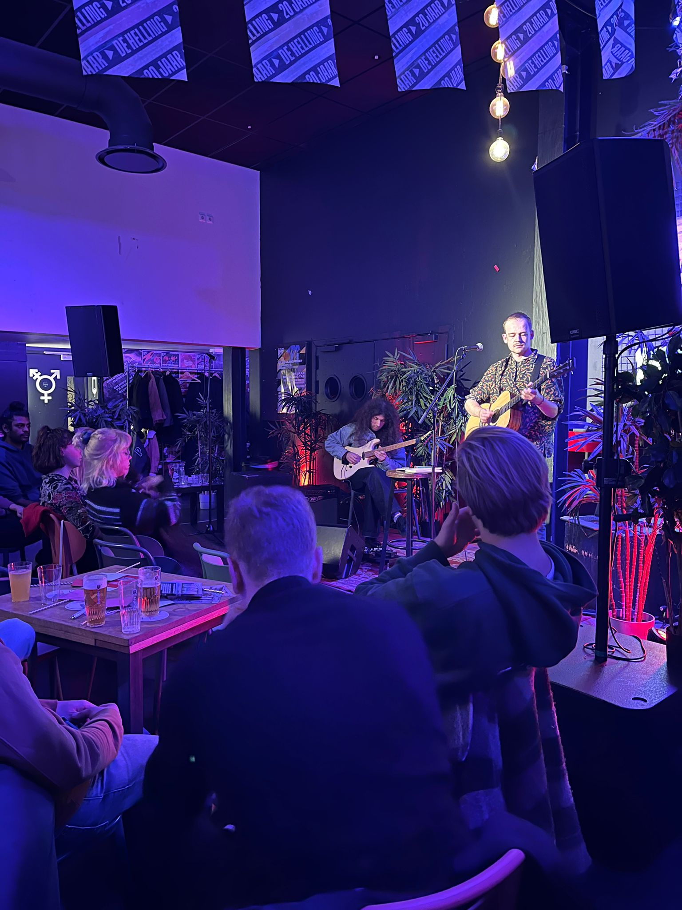

Bio
Jip Gradener is een producer, muzikant en singer-songwriteruit Utrecht, Nederland. Zijn liefde voor het bespelen van de
gitaar ontstond op jonge leeftijd, geïnspireerd door
gitaarvirtuozen zoals Frusciante en Hendrix. Jip heeft zowel
een nuchtere als een spirituele kijk op het leven, wat de
basis vormt voor zijn creativiteit.
Sinds 4 jaar heeft Jip alle Utrechtse podia bezocht als gitarist
van zijn band Picknick Banter, waarvan de debuutsingle
'platform 11' op 3FM is gedraaid. De band kreeg ook de kans
om in 2021 een EP op te nemen in het Patronaat als
onderdeel van een talentactie. Om al zijn creativiteit tot
uiting te brengen, is Jip een jaar geleden gestart met zijn
soloproject. Met optredens in Teatro en De Helling is hij
succesvol van start gegaan. Nu heeft hij plannen om zijn
Nederlandstalige project zorgvuldig in de markt te
positioneren.
Highlights
• Het opnemen en mixen van zijn Joip EP• Optreden in o.a. Ekko en de Helling
• Geselecteerd in talent-actie
Expertises
• Instrumentalist• Produceren, opnemen en mixen
• Songwriting



Mijn Muziek
Hier gaat mijn muziek komen te staan.